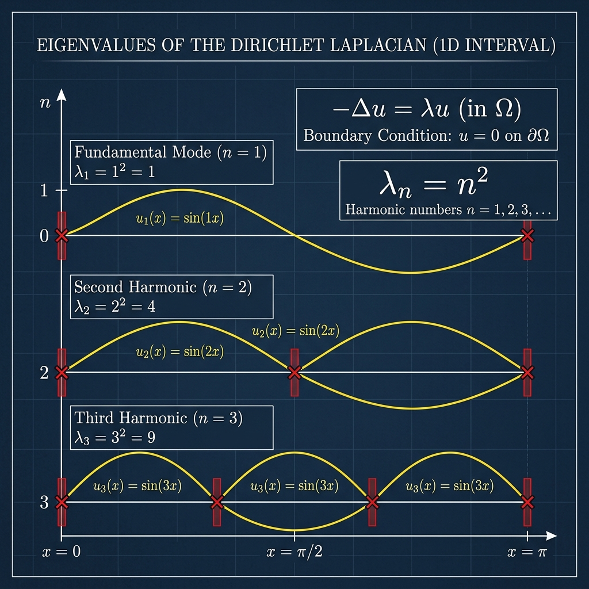

Dirichlet Eigenvalues of the Laplacian

Mathematical Exposition
In the study of partial differential equations and spectral geometry, the Laplace operator exhibits discrete spectra under bounded domains with Dirichlet boundary conditions. The classical 1D model represents a vibrating string clamped at both ends.
Specifically, we seek non-trivial solutions (eigenfunctions) $y: [0, \pi] \to \mathbb{R}$ to the Sturm–Liouville boundary value problem:
$$-y''(x) = \lambda y(x) \quad \text{for } x \in (0, \pi)$$subject to the Dirichlet boundary conditions:
$$y(0) = 0 \quad \text{and} \quad y(\pi) = 0$$The theorem asserts that such a non-trivial solution exists if and only if $\lambda = n^2$ for some positive integer $n \in \mathbb{N}^+$, and the corresponding eigenfunctions are proportional to $y_n(x) = \sin(nx)$.
Resonance and Solving the BVP
Depending on the sign of $\lambda$, the general solution to the ODE $y'' + \lambda y = 0$ changes form:
- Case $\lambda \le 0$: If $\lambda = 0$, the general solution is $y(x) = Ax + B$. Applying $y(0) = 0 \implies B = 0$, and $y(\pi) = 0 \implies A\pi = 0 \implies A = 0$. Thus, only the trivial solution $y(x) \equiv 0$ exists. Similarly, if $\lambda < 0$ (say, $\lambda = -k^2$ for $k > 0$), the general solution is $y(x) = A e^{kx} + B e^{-kx}$. Applying the boundary conditions again forces $A = B = 0$, yielding only the trivial solution.
- Case $\lambda > 0$: If $\lambda > 0$ (say, $\lambda = k^2$ for $k > 0$), the general solution is $y(x) = A \sin(kx) + B \cos(kx)$. Applying the boundary condition at $x = 0$ gives $y(0) = B = 0 \implies y(x) = A \sin(kx)$. Applying the boundary condition at $x = \pi$ gives $y(\pi) = A \sin(k\pi) = 0$. For a non-trivial solution, we must have $A \ne 0$, which forces: $$\sin(k\pi) = 0 \implies k\pi = n\pi \implies k = n \quad \text{for } n \in \mathbb{N}^+$$ Thus, the eigenvalues are $\lambda = k^2 = n^2$.
Lean 4 Formalization
The Lean 4 formalization rigorously proves both directions of the equivalence. The proof handles: 1. ODE solving and boundary constraints for $\lambda \le 0$, showing no non-trivial solutions exist (using Lipschitz properties and Wronskian bounds). 2. Establishing the exact trigonometric solutions for $\lambda > 0$, proving that $\sin(k\pi) = 0$ implies $k$ is an integer. 3. Proving that for any positive integer $n$, $y(x) = \sin(nx)$ is a valid twice-differentiable solution with $y(0)=0$ and $y(\pi)=0$.
import Mathlib
open scoped Real
namespace Submission
theorem k_eq_n (k : ℝ) (hk : 0 < k) (h : Real.sin (k * Real.pi) = 0) : ∃ n : ℕ, 0 < n ∧ k = (n : ℝ) := by
have h1 : ∃ n : ℤ, ↑n * Real.pi = k * Real.pi := Real.sin_eq_zero_iff.mp h
rcases h1 with ⟨m, hm⟩
have h_pi : Real.pi ≠ 0 := Real.pi_ne_zero
have h2 : (m : ℝ) = k := by
calc (m : ℝ) = (m : ℝ) * Real.pi / Real.pi := by rw [mul_div_cancel_right₀ _ h_pi]
_ = k * Real.pi / Real.pi := by rw [hm]
_ = k := by rw [mul_div_cancel_right₀ _ h_pi]
have h3 : 0 < m := by
have h4 : (0 : ℝ) < (m : ℝ) := by rw [h2]; exact hk
exact Int.cast_pos.mp h4
have h4 : ∃ n : ℕ, m = (n : ℤ) := ⟨m.toNat, (Int.toNat_of_nonneg (le_of_lt h3)).symm⟩
rcases h4 with ⟨n, rfl⟩
use n
have h5 : 0 < n := by
have h6 : (0 : ℤ) < (n : ℤ) := h3
exact Int.ofNat_lt.mp h6
exact ⟨h5, h2.symm⟩
theorem deriv_zero_of_pi (dy0 : ℝ) (k : ℝ) (hk : 0 < k)
(h_eq : dy0 * (Real.exp (k * Real.pi) - Real.exp (-k * Real.pi)) = 0) : dy0 = 0 := by
have hkpi : -k * Real.pi < k * Real.pi := by
have hpi : 0 < Real.pi := Real.pi_pos
have hmul : 0 < k * Real.pi := mul_pos hk hpi
linarith
have hexp : Real.exp (-k * Real.pi) < Real.exp (k * Real.pi) := Real.exp_lt_exp.mpr hkpi
have hsub : Real.exp (k * Real.pi) - Real.exp (-k * Real.pi) ≠ 0 := by
linarith
cases mul_eq_zero.mp h_eq with
| inl h => exact h
| inr h => exact (hsub h).elim
theorem wronskian_const_on_Icc (y : ℝ → ℝ) (y2 : ℝ → ℝ) (y2' : ℝ → ℝ) (q : ℝ) (J : Set ℝ)
(hJ : Set.Icc 0 Real.pi ⊆ J)
(h_deriv_y : ∀ x ∈ J, HasDerivAt y (deriv y x) x)
(h_deriv_y' : ∀ x ∈ J, HasDerivAt (deriv y) (q * y x) x)
(h_deriv_y2 : ∀ x, HasDerivAt y2 (y2' x) x)
(h_deriv_y2' : ∀ x, HasDerivAt y2' (q * y2 x) x)
(x : ℝ) (hx : x ∈ Set.Icc 0 Real.pi) : y x * y2' x - deriv y x * y2 x = y 0 * y2' 0 - deriv y 0 * y2 0 := by
let W := fun x => y x * y2' x - deriv y x * y2 x
have hW : ∀ t ∈ J, HasDerivAt W 0 t := by
intro t ht
have d1 : HasDerivAt (fun x => y x * y2' x) (deriv y t * y2' t + y t * (q * y2 t)) t :=
(h_deriv_y t ht).mul (h_deriv_y2' t)
have d2 : HasDerivAt (fun x => deriv y x * y2 x) ((q * y t) * y2 t + deriv y t * y2' t) t :=
(h_deriv_y' t ht).mul (h_deriv_y2 t)
have d3 := d1.sub d2
convert d3 using 1
ring
have hcont : ContinuousOn W (Set.Icc 0 Real.pi) := by
intro t ht
exact (hW t (hJ ht)).continuousAt.continuousWithinAt
have hderiv : ∀ t ∈ Set.Ico 0 Real.pi, HasDerivWithinAt W 0 (Set.Ici t) t := by
intro t ht
exact (hW t (hJ (Set.Ico_subset_Icc_self ht))).hasDerivWithinAt
exact constant_of_has_deriv_right_zero hcont hderiv x hx
theorem lambda_eq_zero_implies_zero (y : ℝ → ℝ) (J : Set ℝ) (hJ : Set.Icc 0 Real.pi ⊆ J)
(h_deriv_y : ∀ x ∈ J, HasDerivAt y (deriv y x) x)
(h_deriv_y' : ∀ x ∈ J, HasDerivAt (deriv y) 0 x)
(h_y0 : y 0 = 0) (h_ypi : y Real.pi = 0) : ∀ x ∈ Set.Icc 0 Real.pi, y x = 0 := by
have h_deriv_const : ∀ x ∈ Set.Icc 0 Real.pi, deriv y x = deriv y 0 := by
intro x hx
have hcont : ContinuousOn (deriv y) (Set.Icc 0 Real.pi) := by
intro t ht
exact (h_deriv_y' t (hJ ht)).continuousAt.continuousWithinAt
have hderiv : ∀ t ∈ Set.Ico 0 Real.pi, HasDerivWithinAt (deriv y) 0 (Set.Ici t) t := by
intro t ht
exact (h_deriv_y' t (hJ (Set.Ico_subset_Icc_self ht))).hasDerivWithinAt
exact constant_of_has_deriv_right_zero hcont hderiv x hx
let W := fun x => y x - deriv y x * x
have hW : ∀ t ∈ J, HasDerivAt W 0 t := by
intro t ht
have d1 : HasDerivAt (fun x => deriv y x * x) (0 * t + deriv y t * 1) t :=
(h_deriv_y' t ht).mul (hasDerivAt_id t)
have d2 : HasDerivAt (fun x => deriv y x * x) (deriv y t) t := by
convert d1 using 1
ring
have d3 := (h_deriv_y t ht).sub d2
convert d3 using 1
ring
have hcont : ContinuousOn W (Set.Icc 0 Real.pi) := by
intro t ht
exact (hW t (hJ ht)).continuousAt.continuousWithinAt
have hderiv : ∀ t ∈ Set.Ico 0 Real.pi, HasDerivWithinAt W 0 (Set.Ici t) t := by
intro t ht
exact (hW t (hJ (Set.Ico_subset_Icc_self ht))).hasDerivWithinAt
intro x hx
have hW_eq := constant_of_has_deriv_right_zero hcont hderiv x hx
dsimp [W] at hW_eq
rw [h_y0, mul_zero, sub_zero] at hW_eq
have y_eq_x : y x = deriv y x * x := by linarith
have h_pi_in : Real.pi ∈ Set.Icc (0 : ℝ) Real.pi := ⟨Real.pi_pos.le, le_refl _⟩
have h_pi := constant_of_has_deriv_right_zero hcont hderiv Real.pi h_pi_in
dsimp [W] at h_pi
rw [h_y0, mul_zero, sub_zero, h_ypi, zero_sub] at h_pi
have h_dy_pi_zero : deriv y Real.pi * Real.pi = 0 := by linarith
have h_pi_ne_zero : Real.pi ≠ 0 := Real.pi_ne_zero
have h_dy_pi : deriv y Real.pi = 0 := by
cases mul_eq_zero.mp h_dy_pi_zero with
| inl h => exact h
| inr h => exact (h_pi_ne_zero h).elim
rw [h_deriv_const x hx, ← h_deriv_const Real.pi h_pi_in, h_dy_pi, zero_mul] at y_eq_x
exact y_eq_x
theorem lambda_lt_zero_implies_zero (y : ℝ → ℝ) (k : ℝ) (hk : 0 < k) (J : Set ℝ) (hJ : Set.Icc 0 Real.pi ⊆ J)
(h_deriv_y : ∀ x ∈ J, HasDerivAt y (deriv y x) x)
(h_deriv_y' : ∀ x ∈ J, HasDerivAt (deriv y) (k^2 * y x) x)
(h_y0 : y 0 = 0) (h_ypi : y Real.pi = 0) : ∀ x ∈ Set.Icc 0 Real.pi, y x = 0 := by
let y2 := fun x => Real.exp (k * x)
let y2' := fun x => k * Real.exp (k * x)
have h_y2 : ∀ x, HasDerivAt y2 (y2' x) x := by
intro t
have h1 := Real.hasDerivAt_exp (k * t)
have h2 := HasDerivAt.const_mul k (hasDerivAt_id t)
have h3 := h1.comp t h2
convert h3 using 1
ring
have h_y2' : ∀ x, HasDerivAt y2' (k^2 * y2 x) x := by
intro t
have h1 := h_y2 t
have h2 := h1.const_mul k
convert h2 using 1
ring
have w1 := wronskian_const_on_Icc y y2 y2' (k^2) J hJ h_deriv_y h_deriv_y' h_y2 h_y2'
let y3 := fun x => Real.exp (-k * x)
let y3' := fun x => -k * Real.exp (-k * x)
have h_y3 : ∀ x, HasDerivAt y3 (y3' x) x := by
intro t
have h1 := Real.hasDerivAt_exp (-k * t)
have h2 := HasDerivAt.const_mul (-k) (hasDerivAt_id t)
have h3 := h1.comp t h2
convert h3 using 1
ring
have h_y3' : ∀ x, HasDerivAt y3' (k^2 * y3 x) x := by
intro t
have h1 := h_y3 t
have h2 := h1.const_mul (-k)
convert h2 using 1
ring
have w2 := wronskian_const_on_Icc y y3 y3' (k^2) J hJ h_deriv_y h_deriv_y' h_y3 h_y3'
have eq_x : ∀ t ∈ Set.Icc 0 Real.pi, y t * (2 * k) = deriv y 0 * (Real.exp (k * t) - Real.exp (-k * t)) := by
intro t ht
have eq1 := w1 t ht
have eq2 := w2 t ht
dsimp [y2, y2', y3, y3'] at eq1 eq2
rw [h_y0, mul_zero, zero_mul, zero_sub] at eq1 eq2
rw [Real.exp_zero, mul_one] at eq1 eq2
have h1 : Real.exp (k * t) * Real.exp (-k * t) = 1 := by
rw [← Real.exp_add]
have : k * t + -k * t = 0 := by ring
rw [this, Real.exp_zero]
have h2 : Real.exp (-k * t) * Real.exp (k * t) = 1 := by
rw [← Real.exp_add]
have : -k * t + k * t = 0 := by ring
rw [this, Real.exp_zero]
have H : ∀ Y Y' E E', (Y * (k * E) - Y' * E) * E' - (Y * (-k * E') - Y' * E') * E = Y * k * (E * E') - Y' * (E * E') - (Y * (-k) * (E' * E) - Y' * (E' * E)) := by
intro Y Y' E E'; ring
calc
y t * (2 * k) = y t * k * 1 - deriv y t * 1 - (y t * (-k) * 1 - deriv y t * 1) := by ring
_ = y t * k * (Real.exp (k * t) * Real.exp (-k * t)) - deriv y t * (Real.exp (k * t) * Real.exp (-k * t))
- (y t * (-k) * (Real.exp (-k * t) * Real.exp (k * t)) - deriv y t * (Real.exp (-k * t) * Real.exp (k * t))) := by
rw [h1, h2]
_ = (y t * (k * Real.exp (k * t)) - deriv y t * Real.exp (k * t)) * Real.exp (-k * t) -
(y t * (-k * Real.exp (-k * t)) - deriv y t * Real.exp (-k * t)) * Real.exp (k * t) := by rw [← H]
_ = (-deriv y 0) * Real.exp (-k * t) - (-deriv y 0) * Real.exp (k * t) := by rw [eq1, eq2]
_ = deriv y 0 * (Real.exp (k * t) - Real.exp (-k * t)) := by ring
have h_pi_in : Real.pi ∈ Set.Icc (0 : ℝ) Real.pi := ⟨Real.pi_pos.le, le_refl _⟩
have h_pi := eq_x Real.pi h_pi_in
rw [h_ypi, zero_mul] at h_pi
have h_dy0_zero := deriv_zero_of_pi (deriv y 0) k hk h_pi.symm
intro x hx
have h_x := eq_x x hx
rw [h_dy0_zero, zero_mul] at h_x
have h2k : 2 * k ≠ 0 := by linarith
cases mul_eq_zero.mp h_x with
| inl h => exact h
| inr h => exact (h2k h).elim
theorem lambda_nonpos_implies_zero (lam : ℝ) (y : ℝ → ℝ) (h_lam : lam ≤ 0) (J : Set ℝ) (hJ : Set.Icc 0 Real.pi ⊆ J)
(h_deriv_y : ∀ x ∈ J, HasDerivAt y (deriv y x) x)
(h_deriv_y' : ∀ x ∈ J, HasDerivAt (deriv y) (-(lam * y x)) x)
(h_y0 : y 0 = 0) (h_ypi : y Real.pi = 0) : ∀ x ∈ Set.Icc 0 Real.pi, y x = 0 := by
rcases eq_or_lt_of_le h_lam with rfl | h_lam_lt
· have h_deriv_y'_0 : ∀ x ∈ J, HasDerivAt (deriv y) 0 x := by
intro x hx
have h := h_deriv_y' x hx
have h_eq : -(0 * y x) = 0 := by ring
rwa [h_eq] at h
exact lambda_eq_zero_implies_zero y J hJ h_deriv_y h_deriv_y'_0 h_y0 h_ypi
· let k := Real.sqrt (-lam)
have hk : 0 < k := Real.sqrt_pos.mpr (neg_pos.mpr h_lam_lt)
have hk2 : k^2 = -lam := Real.sq_sqrt (neg_nonneg.mpr (le_of_lt h_lam_lt))
have h_deriv_y'_k : ∀ x ∈ J, HasDerivAt (deriv y) (k^2 * y x) x := by
intro x hx
have h := h_deriv_y' x hx
have h_eq : -(lam * y x) = k^2 * y x := by
calc -(lam * y x) = (-lam) * y x := by ring
_ = k^2 * y x := by rw [← hk2]
rwa [h_eq] at h
exact lambda_lt_zero_implies_zero y k hk J hJ h_deriv_y h_deriv_y'_k h_y0 h_ypi
theorem lambda_gt_zero_implies_sin_zero (y : ℝ → ℝ) (k : ℝ) (hk : 0 < k) (J : Set ℝ) (hJ : Set.Icc 0 Real.pi ⊆ J)
(h_deriv_y : ∀ x ∈ J, HasDerivAt y (deriv y x) x)
(h_deriv_y' : ∀ x ∈ J, HasDerivAt (deriv y) (-(k^2) * y x) x)
(h_y0 : y 0 = 0) (h_ypi : y Real.pi = 0) (h_y_not_zero : ∃ x ∈ Set.Ioo 0 Real.pi, y x ≠ 0) : Real.sin (k * Real.pi) = 0 := by
let y2 := fun x => Real.sin (k * x)
let y2' := fun x => k * Real.cos (k * x)
have h_y2 : ∀ x, HasDerivAt y2 (y2' x) x := by
intro t
have h1 := Real.hasDerivAt_sin (k * t)
have h2 := HasDerivAt.const_mul k (hasDerivAt_id t)
have h3 := h1.comp t h2
convert h3 using 1
ring
have h_y2' : ∀ x, HasDerivAt y2' (-(k^2) * y2 x) x := by
intro t
have h1 := Real.hasDerivAt_cos (k * t)
have h2 := HasDerivAt.const_mul k (hasDerivAt_id t)
have h3 := h1.comp t h2
have h4 := h3.const_mul k
convert h4 using 1
ring
have w1 := wronskian_const_on_Icc y y2 y2' (-(k^2)) J hJ h_deriv_y h_deriv_y' h_y2 h_y2'
let y3 := fun x => Real.cos (k * x)
let y3' := fun x => -k * Real.sin (k * x)
have h_y3 : ∀ x, HasDerivAt y3 (y3' x) x := by
intro t
have h1 := Real.hasDerivAt_cos (k * t)
have h2 := HasDerivAt.const_mul k (hasDerivAt_id t)
have h3 := h1.comp t h2
convert h3 using 1
ring
have h_y3' : ∀ x, HasDerivAt y3' (-(k^2) * y3 x) x := by
intro t
have h1 := Real.hasDerivAt_sin (k * t)
have h2 := HasDerivAt.const_mul k (hasDerivAt_id t)
have h3 := h1.comp t h2
have h4 := h3.const_mul (-k)
convert h4 using 1
ring
have w2 := wronskian_const_on_Icc y y3 y3' (-(k^2)) J hJ h_deriv_y h_deriv_y' h_y3 h_y3'
have eq_x : ∀ t ∈ Set.Icc 0 Real.pi, y t * k = deriv y 0 * Real.sin (k * t) := by
intro t ht
have eq1 := w1 t ht
have eq2 := w2 t ht
dsimp [y2, y2', y3, y3'] at eq1 eq2
rw [h_y0, mul_zero, zero_mul, zero_sub] at eq1 eq2
have eq1_simp : y t * k * Real.cos (k * t) - deriv y t * Real.sin (k * t) = 0 := by
calc y t * k * Real.cos (k * t) - deriv y t * Real.sin (k * t)
_ = y t * (k * Real.cos (k * t)) - deriv y t * Real.sin (k * t) := by ring
_ = -(deriv y 0 * Real.sin 0) := eq1
_ = -(deriv y 0 * 0) := by rw [Real.sin_zero]
_ = 0 := by rw [mul_zero, neg_zero]
have eq2_simp : y t * (-k * Real.sin (k * t)) - deriv y t * Real.cos (k * t) = -deriv y 0 := by
calc y t * (-k * Real.sin (k * t)) - deriv y t * Real.cos (k * t)
_ = -(deriv y 0 * Real.cos 0) := eq2
_ = -(deriv y 0 * 1) := by rw [Real.cos_zero]
_ = -deriv y 0 := by rw [mul_one]
have H : ∀ Y Y' S C, (Y * k * C - Y' * S) * C - (Y * (-k * S) - Y' * C) * S = Y * k * (C^2 + S^2) := by
intro Y Y' S C; ring
have h_trig : Real.cos (k * t) ^ 2 + Real.sin (k * t) ^ 2 = 1 := Real.cos_sq_add_sin_sq (k * t)
calc
y t * k = y t * k * 1 := by ring
_ = y t * k * (Real.cos (k * t) ^ 2 + Real.sin (k * t) ^ 2) := by rw [h_trig]
_ = (y t * k * Real.cos (k * t) - deriv y t * Real.sin (k * t)) * Real.cos (k * t) -
(y t * (-k * Real.sin (k * t)) - deriv y t * Real.cos (k * t)) * Real.sin (k * t) := by rw [← H]
_ = 0 * Real.cos (k * t) - (-deriv y 0) * Real.sin (k * t) := by rw [eq1_simp, eq2_simp]
_ = deriv y 0 * Real.sin (k * t) := by ring
have h_pi_in : Real.pi ∈ Set.Icc (0 : ℝ) Real.pi := ⟨Real.pi_pos.le, le_refl _⟩
have h_pi := eq_x Real.pi h_pi_in
rw [h_ypi, zero_mul] at h_pi
have h_dy0_zero : deriv y 0 * Real.sin (k * Real.pi) = 0 := h_pi.symm
cases mul_eq_zero.mp h_dy0_zero with
| inl h_dy0 =>
have h_y_zero : ∀ x ∈ Set.Icc 0 Real.pi, y x = 0 := by
intro x hx
have h_x := eq_x x hx
rw [h_dy0, zero_mul] at h_x
have hk_ne_zero : k ≠ 0 := ne_of_gt hk
cases mul_eq_zero.mp h_x with
| inl h => exact h
| inr h => exact (hk_ne_zero h).elim
rcases h_y_not_zero with ⟨x0, hx0, h_not_zero⟩
have hx0_icc : x0 ∈ Set.Icc 0 Real.pi := ⟨hx0.1.le, hx0.2.le⟩
exact (h_not_zero (h_y_zero x0 hx0_icc)).elim
| inr h_sin => exact h_sin
theorem dirichlet_eigenvalues_eq_nat_sq (lam : ℝ) :
(∃ (y : ℝ → ℝ) (J : Set ℝ),
IsOpen J ∧ Set.Icc (0 : ℝ) Real.pi ⊆ J ∧
(∀ x ∈ J, HasDerivAt y (deriv y x) x) ∧
(∀ x ∈ J, HasDerivAt (deriv y) (-(lam * y x)) x) ∧
y 0 = 0 ∧ y Real.pi = 0 ∧
∃ x ∈ Set.Ioo (0 : ℝ) Real.pi, y x ≠ 0) ↔
∃ n : ℕ, 0 < n ∧ lam = (n : ℝ) ^ 2 := by
constructor
· rintro ⟨y, J, _, hJ, h_deriv_y, h_deriv_y', h_y0, h_ypi, x0, hx0, h_y_not_zero⟩
by_cases h_lam_nonpos : lam ≤ 0
· have h_y_zero : ∀ x ∈ Set.Icc 0 Real.pi, y x = 0 :=
lambda_nonpos_implies_zero lam y h_lam_nonpos J hJ h_deriv_y h_deriv_y' h_y0 h_ypi
have hx0_icc : x0 ∈ Set.Icc 0 Real.pi := ⟨hx0.1.le, hx0.2.le⟩
have : y x0 = 0 := h_y_zero x0 hx0_icc
exact (h_y_not_zero this).elim
· have h_lam_pos : 0 < lam := not_le.mp h_lam_nonpos
let k := Real.sqrt lam
have hk : 0 < k := Real.sqrt_pos.mpr h_lam_pos
have hk2 : k^2 = lam := Real.sq_sqrt (le_of_lt h_lam_pos)
have h_deriv_y'_k : ∀ x ∈ J, HasDerivAt (deriv y) (-(k^2) * y x) x := by
intro x hx
have h := h_deriv_y' x hx
have h_eq : -(lam * y x) = -(k^2) * y x := by
calc -(lam * y x) = (-lam) * y x := by ring
_ = -(k^2) * y x := by rw [← hk2]
rwa [h_eq] at h
have h_sin_pi_zero := lambda_gt_zero_implies_sin_zero y k hk J hJ h_deriv_y h_deriv_y'_k h_y0 h_ypi ⟨x0, hx0, h_y_not_zero⟩
have h_k_eq_n := k_eq_n k hk h_sin_pi_zero
rcases h_k_eq_n with ⟨n, hn, h_k_eq⟩
use n, hn
rw [h_k_eq] at hk2
exact hk2.symm
· rintro ⟨n, hn, rfl⟩
use fun x => Real.sin (n * x), Set.univ
refine ⟨isOpen_univ, Set.subset_univ _, ?_, ?_, ?_, ?_, ?_⟩
· intro x _
have h1 := HasDerivAt.const_mul (n : ℝ) (hasDerivAt_id x)
have h2 := Real.hasDerivAt_sin ((n : ℝ) * x)
have h3 := HasDerivAt.comp x h2 h1
simp only [mul_one] at h3
have h4 : deriv (fun x => Real.sin (↑n * x)) x = Real.cos (↑n * x) * ↑n := h3.deriv
rwa [h4]
· intro x _
have h_deriv_eq : (deriv fun x => Real.sin (↑n * x)) = fun x => Real.cos (↑n * x) * ↑n := by
ext t
have ht1 := HasDerivAt.const_mul (n : ℝ) (hasDerivAt_id t)
have ht2 := Real.hasDerivAt_sin ((n : ℝ) * t)
have ht3 := HasDerivAt.comp t ht2 ht1
simp only [mul_one] at ht3
exact ht3.deriv
rw [h_deriv_eq]
have h1 := HasDerivAt.const_mul (n : ℝ) (hasDerivAt_id x)
have h2 := Real.hasDerivAt_cos ((n : ℝ) * x)
have h3 := HasDerivAt.comp x h2 h1
simp only [mul_one] at h3
have h4 := h3.mul_const (n : ℝ)
convert h4 using 1
ring
· rw [mul_zero, Real.sin_zero]
· rw [Real.sin_nat_mul_pi]
· use Real.pi / (2 * n)
have hn_pos : (0 : ℝ) < n := Nat.cast_pos.mpr hn
have h_pi_pos : 0 < Real.pi := Real.pi_pos
have h_in_Ioo : Real.pi / (2 * n) ∈ Set.Ioo 0 Real.pi := by
constructor
· exact div_pos h_pi_pos (mul_pos zero_lt_two hn_pos)
· rw [div_lt_iff₀ (mul_pos zero_lt_two hn_pos)]
calc Real.pi = Real.pi * 1 := by ring
_ < Real.pi * (2 * n) := by
apply mul_lt_mul_of_pos_left
· have h_n_ge_1 : 1 ≤ (n : ℝ) := Nat.one_le_cast.mpr hn
linarith
· exact h_pi_pos
refine ⟨h_in_Ioo, ?_⟩
have h_mul : ↑n * (Real.pi / (2 * ↑n)) = Real.pi / 2 := by
calc ↑n * (Real.pi / (2 * ↑n)) = (↑n * Real.pi) / (2 * ↑n) := by ring
_ = Real.pi * ↑n / (2 * ↑n) := by ring
_ = Real.pi / 2 := by
rw [mul_div_mul_right Real.pi 2 (ne_of_gt hn_pos)]
rw [h_mul, Real.sin_pi_div_two]
exact one_ne_zero
end Submission